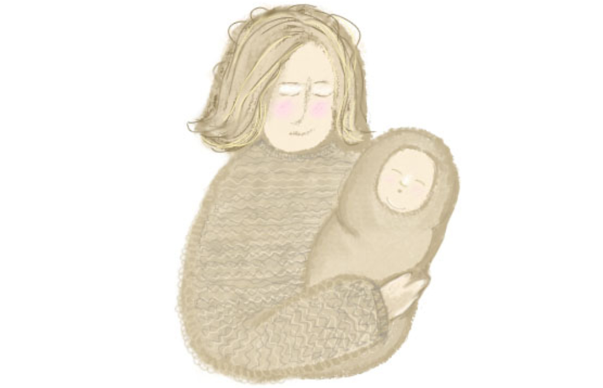
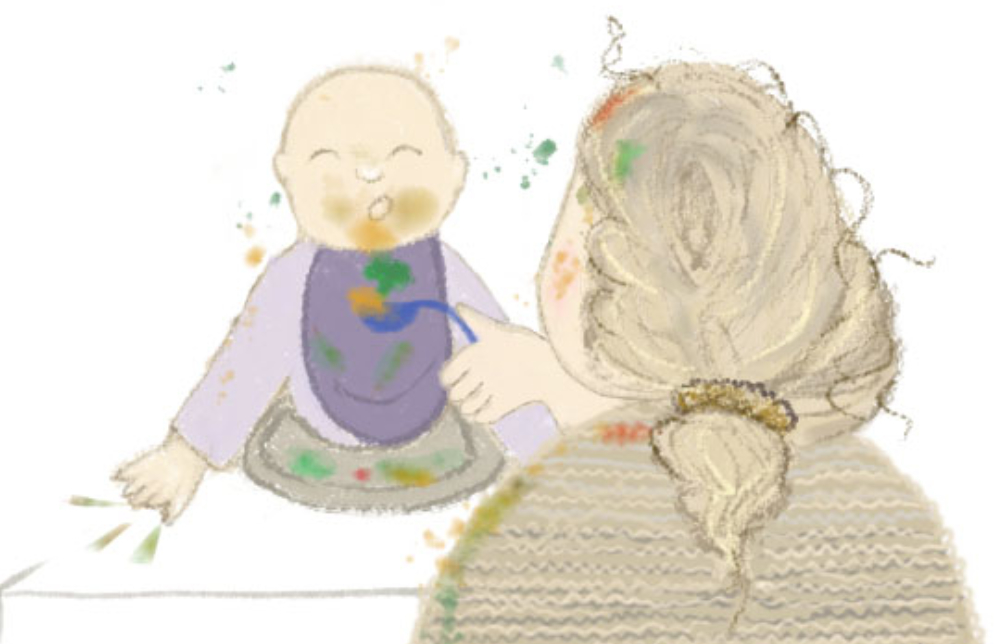
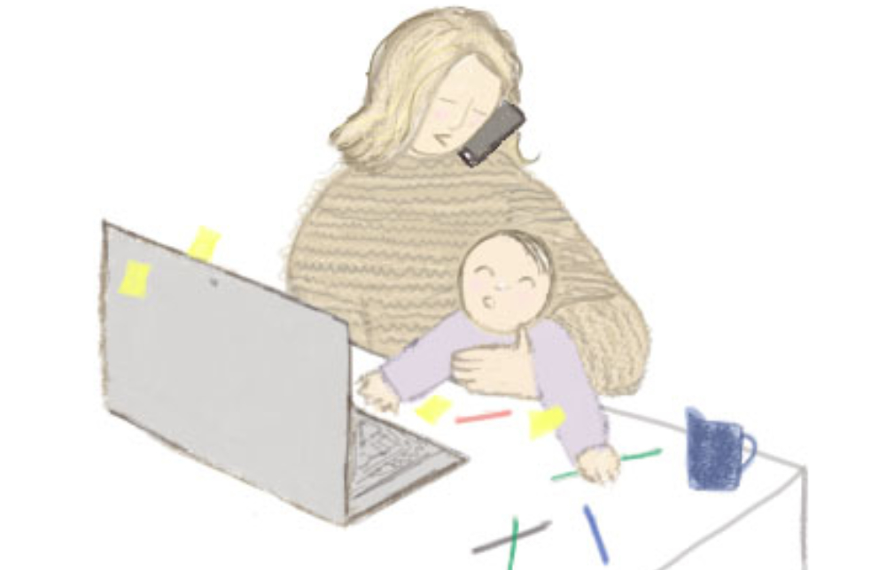
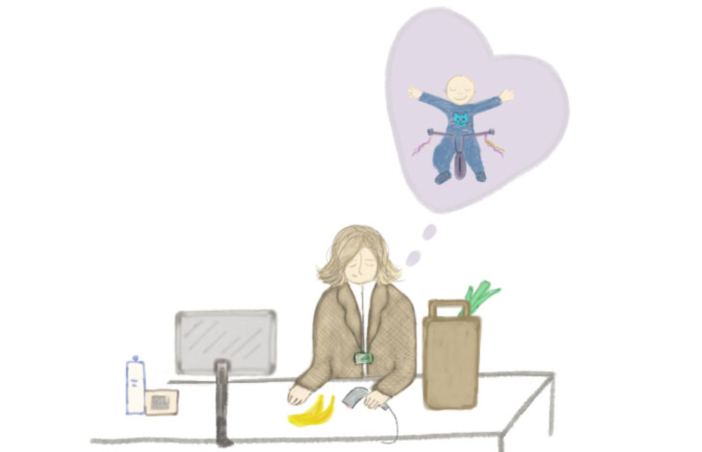

Investigație Dela0.ro



Că ne place, că nu ne place, și mămicile au nevoie de servicii medicale importante în perioada în care au un copil mic. Și atunci, în această logică, trebuie să contribuie cu o sumă infim de mică raportat la beneficiile pe care sistemul medical le pune în practică.
, justifica premierul Ilie Bolojan în vara anului trecut decizia de a taxa cu 10% indemnizația pentru creșterea copilului.
Tot șeful guvernului critică în mai toate ieșirile publice sistemul beneficiilor maternale din România susținând că „trebuie" să spună „niște adevăruri":
Să știți că avem unul dintre cele mai lungi concedii de maternitate din Europa. Nu are nicio țară mai lung decât România. Nu e o problemă, e foarte bine. Trebuie să luăm niște măsuri să încurajăm rata natalității - dar atâta cât ne putem permite!
Decizia de a reduce indemnizația pentru creșterea copilului, prin reținerea CASS (n.r. - contribuția de asigurări sociale de sănătate), a fost una dintre primele măsuri bugetare luate de Guvernul Bolojan pentru reducerea deficitului și redresarea finanțelor publice.
Formal se mai strâng niște bani în vistieria statului. Pe fond, însă, niciuna dintre problemele care afectează politicile, normele legale și practicile administrative la revenirea din concediul de creștere a copilului nu a fost examinată, și cu atât mai puțin rezolvată.
VORBE… . Nici în epoca Bolojan, nici în epocile guvernamentale care au precedat-o, statul român nu s-a preocupat de identificarea și soluționarea acestor problemele de fond din zona maternității.
Creșterea sau reducerea indemnizației de creștere a copilului nu e, în sine, o politică publică. E, mai degrabă, o măsură bugetară destinată atingerii unor scopuri eminamente politice. Vrei să simulezi grija pentru ideea de asistență socială? Iei din vârful pixului decizia creșterii indemnizației - și cam atât! Vrei, din contră, să transmiți că productivitatea e farul politic care te călăuzește? Scazi indemnizația tot din pix, cu aceeași ușurință cu care au crescut-o ceilalți - și cam atât!
O politică publică solidă în materie de maternitate și, mai ales, în materie de revenire a părintelui din concediul de creștere a copilului înseamnă un efort consistent de gândire și coordonare guvernamentală. Statul român nu s-a uitat niciodată la ce înseamnă cu adevărat revenirea unei mame (sau a unui tată) la locul de muncă după concediul parental. Nu s-a uitat la ce spun datele despre revenirea mamelor la muncă. Statul român doar a majorat sau a tăiat o indemnizație. Nu a fost niciodată interesat să adreseze niște probleme sistemice care determină exact eșecul sistemului de reintegrare a părintelui revenit în activitate.
Suntem la șapte luni de la anunțarea măsurii de taxare cu 10% a indemnizației pentru creșterea copilului. Și - deși actualul executiv vorbește de reformă și despre un alt fel de a administra treburile publice - niciun demers real de reașezare a abordării guvernamentale nu s-a manifestat pe tema revenirii mamelor (sau taților) la locul de muncă.
… ȘI FAPTE. În 2025, aproape 135.000 de mame și tați reveneau în câmpul muncii după un concediu de creștere a copilului întins de la câteva luni până la doi ani, în funcție de opțiunea părinților. Aproape 25% dintre aceștia au revenit la muncă înainte să împlinească copilul un an. 85% dintre părinții care intră în concediu de creștere a copilului sunt mame.
Unele dintre aceste mame sunt concediate la scurt timp după ce revin la muncă, deși avem din 2003 o lege care interzice acest lucru. Altele sunt forțate de angajatori să-și dea demisia prin tot felul de metode: sunt retrogradate, le sunt tăiate salariile sau pur și simplu le sunt refuzate măririle.
Angajatorii nu le informează în legătură cu drepturile pe care le au la revenirea din concediul pentru creșterea copilului și nu le oferă programe de reintegrare profesională. Deși există prevederi legale în acest sens, Inspectoratele Teritoriale de Muncă - organismele de control - nu au aplicat în ultimiii șapte ani nicio sancțiune cu privire la absența acestor programe profesionale de reintegrare. De ce? Pentru că nu au baza legală să amendeze.
În vara lui 2024 povesteam pe rețelele de socializare despre cât de dificilă poate să fie această revenire pentru o femeie. Vorbeam de pe o poziție privilegiată, care viza mai degrabă acomodarea unor stări emoționale noi și adaptarea la un nou program, nicidecum privarea de drepturi sau existența unui angajator interesat să scape de mine. Multe mame se confruntă cu probleme din a doua categorie.
Încurajată de comentariile celor care invocau absența acestui subiect de pe agenda publică am decis să documentez pentru Dela0.ro cum arată reintegrarea mamelor întoarse din concediul de creșterea a copilului în România.
Între timp, documentarea a căpătat proporții mamut.
Am vorbit cu 18 mame, am studiat actele judiciare din patru procese în care au fost contestate decizii de concediere luate la revenirea din maternitate, am solicitat date de la instituții publice (precum Inspectoratele Teritoriale de Muncă sau Agenția Națională de Plăți și Inspecție Socială), am pus întrebări Ministerului Muncii, am discutat cu avocați specializați în litigii de muncă, dar și cu activiști pentru drepturile femeilor. Nu în ultimul rând, am trimis solicitări de presă către 18 mari angajatori publici și privați, pentru a înțelege cum arată în practică revenirea la muncă din concediul de creștere a copilului.
În ciuda acestui efort documentar considerabil ce am obținut este o vedere parțială. Și asta pentru că toate cele 18 mame cu care am discutat ocupă poziții din zona gulerelor albe: finanțe, bănci, IT, ONG, activism, educație, cultură, consultanță sau vânzări. Tocmai de aceea articolul de față nu este doar o încercare de a explica un proces social eșuat, ci și un apel la mai multe mărturii. Mărturii din partea femeilor ale căror voci nu se aud niciodată. Iar acolo unde vocile nu se aud, abuzurile sunt și mai mari.
Odată cu publicarea acestui articol, ne-am propus la Dela0.ro să lansăm și un apel. Vrem să realizăm o hartă a abuzurilor comise față de mamele revenite la muncă după concediul de creștere a copilului. Dar pentru asta e necesar un efort colectiv.
Mai multe detalii vor fi de găsit la finalul articolului. Până acolo, iată faptele!

O BUTAFORIE DE OCHII UE.
dintre mamele care se întorc la muncă după concediul de creștere a copilului spun că au avut o experiență negativă de reintegrare. Doar 31% spun că reintegrarea a fost o experiență pozitivă. Rezultatele se bazează pe mărturiile a 1.500 de mame și stau la baza studiului Ce rost are mama în România?, publicat în martie 2024 și realizat de Andra Pintican, specialistă în resurse umane, fondatoarea Școlii de HR și a Centrului de Carieră.
Realitatea ne arată că simpla existență a unui cadru legal nu e o garanție a respectării lui. Statul nu ar trebui să fie interesat doar de adoptarea unor norme, ci și de cum sunt ele aplicate ulterior, de capacitatea mecanismelor de control de a sancționa neaplicarea.
În chestiunea revenirii la muncă după maternitate, statul român nu s-a mai preocupat de acest detaliu. A vrut doar să bifeze niște obligații și atât.
Ordonanța de urgență care privește protecția maternității a fost adoptată în 2003 pentru îndeplinirea cerințelor asumate în procesul de aderare la Uniunea Europeană. Ordonanța protejează trei categorii de persoane: femeia gravidă, femeia care revine la locul de muncă după efectuarea concediului de lăuzie (adică după cele 42 de zile obligatorii din concediul de maternitate postnatal) și femeia care alăptează.
Practic, OUG 96/2003 nu protejează femeia care revine la locul de muncă după concediul de creștere a copilului decât dacă e în situația în care încă alăptează. Concediul de creștere a copilului (abreviat CIC) începe după terminarea celor 126 de zile de concediu de maternitate (n.r. - cu care nu trebuie confundat).
Există totuși două legi care conțin prevederi legate de mamele care revin la muncă după concediul de creștere a copilului (n.r. - cu durată de până la doi ani). Codul Muncii spune clar că o femeie care revine la muncă, fie după concediul de maternitate, fie după CIC, nu poate fi dată afară decât în niște condiții foarte specifice. Legea privind egalitatea de șanse și de tratament între femei și bărbați spune că angajatorul trebuie să ofere mamelor revenite din concediul de maternitate sau din CIC programe de reintegrare și toate beneficiile primite de colegi în perioada suspendării contractului său, inclusiv eventuale măriri de salariu.
Alte drepturi legale, care pot fi invocate de mamele revenite din CIC, sunt valabile pentru toți angajații și se referă la organizarea programului de lucru. Și mai sunt drepturile care vizează părinții în general și au legătură cu zilele de concediu atunci când copilul e bolnav.
SURSE: OUG 96/2003, Legea 202/2002, Legea 53/2003, OUG 158/2005, Legea 76/2002
Angajatorul nu te poate concedia în primele șase luni de la momentul revenirii din concediul pentru creșterea copilului. Există doar câteva excepții de la această regulă.
Dacă încă alăptezi îți poți lua două ore pauză în timpul programului sau îți poți reduce programul de lucru la șase ore.
Dacă încă alăptezi angajatorul nu te poate obliga să lucrezi noaptea. De asemenea, nu poți munci în condiții insalubre sau greu de tolerat fizic.
Ai dreptul la un program de reintegrare profesională a cărui durată nu trebuie să fie mai mică de cinci zile lucrătoare.
Ai dreptul la toate beneficiile primite de colegii tăi cât timp ai fost în concediu de creștere a copilului. Inclusiv la mărire salarială.
Ai dreptul la patru zile pe lună de muncă la domiciliu sau în regim de telemuncă, până când copilul împlinește 11 ani, dacă natura muncii pe care o faci permite așa ceva.
Poți solicita program individualizat de muncă. Iată câteva exemple de organizare flexibilă a timpului de lucru: munca la distanță, ore flexibile pentru începerea și terminarea programului, timp de muncă parțial, săptămână de lucru comprimată. Angajatorul este obligat să motiveze refuzul de a-ți oferi un program individualizat.
Poți cere concediu medical plătit pentru toții copiii de până la 12 ani. Durata concediului pentru îngrijirea copilului bolnav este de maxim 45 de zile calendaristice pe an, pentru fiecare copil.
Poți beneficia gratuit de servicii de formare profesională. Cererea trebuie făcută în termen de 12 luni de la reluarea activității.
În ultimii 26 de ani au existat doar două interpelări în Parlament pe tema revenirii mamelor la muncă după concediul de creștere a copilului. Una e din 2011, alta din 2024. Interpelarea din 2011 a fost formulată de o parlamentară UDMR, iar cea din 2024 de un parlamentar independent. Cea din 2011 aborda chiar tema cursurilor / programelor / training-urilor care să facă reintegrarea mai ușoară.
Indiferența autorităților cu privire la revenirea mamelor la locul de muncă e paradoxală având în vedere preocuparea constantă, la nivel declarativ, față de scăderea demografică. Creșterea natalității și, mai nou, productivitatea sunt mantre politice în România recentă - însă, ca de fiecare dată, soluțiile concrete pentru atingerea acestor obiective de țară lipsesc.
O simulare a Institutului Național de Statistică arată că, în 2050, populația României va ajunge la 16 milioane de locuitori. Tot cei de la INS au arătat că în 2025 s-au născut de patru ori mai puțini copii decât acum 100 de ani. De asemenea, o analiză a ONU privind modul în care demografia României va evolua în următoarele decenii estimează că, până în anul 2100, populația ar putea scădea chiar până la opt milioane de locuitori.
Click pe hartă pentru a explora valorile și selectează cu ajutorul butoanelor anii.
Sursa: Eurostat, proiecții demografice regionale NUTS3. Procentul copiilor sub 16 ani din populația totală.
Încurajarea natalității înseamnă în acest moment aceleași măsuri fără orizont: vouchere, prime, bonusuri. Foarte puțin se vorbește despre trai accesibil, creșterea numărului de creșe și grădinițe publice fiind de pildă o promisiune politică mereu neonorată. Și mai puțin - adică spre deloc - se vorbește despre reintegrarea mamelor la locul de muncă.
În practică, de cele mai multe ori, mamele se reîntorc din concediul de creștere a copilului în locuri care nu le recunosc noua realitate, în care sunt privite ca niște privilegiate, în care nu primesc condiții de muncă adaptate la situația lor. În schimb, sunt așteptate să livreze la fel ca înainte să devină mame: să stea peste program, să fie disponibile în vacanțe, să nu solicite din senin concedii medicale. Se întorc în locuri în care, deși așteptarea este să livreze performanță, sunt percepute ca fiind mai puțin pregătite din cauza maternității.
În ultimă instanță revenirea mamelor la muncă după concediul de creștere a copilului este o chestiune de drepturi. O femeie care naște nu pierde dreptul la muncă. O femeie care naște nu e mai mult mamă și mai puțin profesionistă la locul de muncă doar pentru că așa decide angajatorul. O femeie care stă în concediu de creștere a copilului doi ani nu pierde dreptul de a primi, la întoarcere, beneficiile oferite colegilor săi în perioada de absență, inclusiv creșterile salariale. Aceste creșteri salariale nu sunt un moft. Sunt un drept.
Când vine vorba de reintegrarea după CIC, experiențele negative la locul de muncă diferă în funcție de mediul profesional. Sunt șanse mai mici ca o mamă angajată într-o corporație să fie hărțuită sau agresată verbal. Șansele ca așa ceva să se întâmple sunt mai mari dacă lucrezi ca îngrijitoare, vânzătoare sau muncitoare necalificată într-o firmă mică, cu puțini angajați.
Dela0.ro nu a reușit să obțină în mod direct mărturii ale mamelor care sunt la mâna micilor angajatori. Am ales o cale indirectă de a observa această realitate: platforma ReJust, dezvoltată de Consiliul Superior al Magistraturii. Interfața online permite accesul la hotărârile judecătorești pronunțate de instanțele naționale.
Dela0.ro a identificat pe această platformă 43 de sesizări care au vizat contestarea deciziei de concediere între 2019 - 2025 de către mame revenite din CIC. 75% dintre acestea au fost admise de instanțe. În cazul celor respinse, decizia de concediere a avut loc în urma reorganizării judiciare, a dizolvării sau falimentului angajatorului. Sunt excepțiile în baza cărora angajatorii pot concedia o mamă revenită la locul de muncă.
Dintre cele 43 de contestații doar patru vizează locuri de muncă ce ar intra în categoria gulere albastre.
Taci din gură că te dau cu capul de toți pereții!
Ești o nenorocită!
Te calc în picioare dacă te mai aud cu drepturile tale!
Nu accepți, te trec nemotivată și te concediez pe motive disciplinare!
Așa i s-ar fi adresat angajatorul Valeriei, o femeie abia revenită din concediul de creștere a copilului. Era croitoreasă necalificată într-o fabrică de confecții care avea la vremea respectivă 57 de angajați. S-a întors la muncă în aprilie 2019, după doi ani de concediu de creștere a copilului. Administratorii i-au cerut să renunțe la postul ei pentru cel de femeie de serviciu. Valeria a refuzat, motiv pentru care administratorii au devenit agresivi verbal cu ea. Femeia a chemat poliția, care a sfătuit-o să plece pentru a aplana conflictul, dar și să depună plângere la Inspectoratul Teritorial de Muncă. Pe 22 aprilie 2019 a fost concediată.
O lună mai târziu, Valeria a cerut în instanță anularea deciziei de concediere. În iunie 2020 instanța a anulat această decizie, ceea ce însemna că Valeria putea reveni la muncă pe postul inițial.
Faptele descrise mai sus sunt de găsit în hotărârea instanței care este publică pe ReJust.ro.
Cristina, o femeie care făcea curățenie la o grădiniță, a revenit la muncă în septembrie 2019 după doi ani de concediu de creștere a copilului. Trei luni mai târziu a fost concediată, fiind considerată de angajator inaptă temporar să-și îndeplinească atribuțiile. O evaluare făcută de medicina muncii arăta că e agresivă, incapabilă să se încadreze în colectiv. La momentul emiterii deciziei de concediere fișa de aptitudini nu era însă definitivată. După aproape doi ani de procese, Cristina a obținut repunerea pe post, despăgubiri, dar și daune morale în valoare de 10.000 de lei.
În cazul Manuelei, asistentă medicală, angajatorul a invocat reorganizarea judiciară pentru concedierea ei. A dispus această măsură cu cinci zile înainte ca Manuela să revină la locul de muncă din CIC. Nu exista însă nicio dovadă a acestei reorganizări. Opt luni a durat procesul în urma căruia instanța a decis reintegrarea femeii pe postul deținut.
Simona, vânzătoare într-un magazin, a revenit la muncă cu trei luni înainte de terminarea concediului de creștere a copilului. Era însărcinată din nou și, din motive de sănătate, a fost nevoită destul de repede să intre în concediu medical pentru risc maternal. Așa că angajatorul a decis să-i închidă contractul de muncă pe motiv că postul a fost desființat. Și în cazul ei instanța a decis reintegrarea pe postul deținut, dar și plata unor despăgubiri de către angajator.
Avocata Elenina Nicuț spune că astfel de contestații se câștigă de la intrarea în tribunal, dar durează mult.
În cazul celor 43 de contestații consultate de Dela0.ro pe platforma ReJust durata de soluționare variază între șase luni și doi ani și jumătate, media fiind undeva la un an și jumătate. 86% dintre contestații au fost înaintate de mame care lucrează ca economiste, contabile, directoare, medici, funcționari publici.
Deși un astfel de proces e ușor de câștigat, la nivel național sunt doar 43 de contestații în șapte ani. Partea financiara poate constitui un impediment, mai ales că trebuie estimată din dublă perspectiva: cheltuielile proprii, plus cheltuielile de judecată obținute de partea adversă, în caz de respingere a acțiunii.Elenina Nicuț, avocată
Uniunea Națională a Barourilor din România recomandă un onorariu minim de 2.900 de lei pentru contestarea deciziei de concediere. Dincolo de obstacolele financiare, mai este vorba de educație și disponibilitate.
În general, mamele cu venituri medii spre mari sunt cele mai dispuse să raporteze astfel de abuzuri, susține Ana Măiță, președinta asociației Mame pentru Mame. Ana Măiță pune această realitate pe seama educației, care duce la un nivel mai mare de conștientizare a noțiunii de drepturi în muncă, și pe o mai mare disponibilitate emoțională din partea acestor femei să se înhame la un astfel de parcurs.
Realizează că cel mai probabil nu vor rămâne la respectivul loc de muncă, însă le deranjează nedreptatea, arată Ana Măiță.
În 2023 Asociația Mame pentru Mame a consiliat 17 mame revenite la muncă după concediul de creștere a copilului. În cazul angajatorilor care nu le mai vor asociația le sfătuiește să negocieze un pachet solid de salarii compensatorii în schimbul demisiei.
Sigur că ele se pot adresa și instanței cu șanse aproape certe de câștig, însă la fel de adevărat este că și în cazul în care câștigă mediul de lucru la compania care le-a vrut plecate va fi foarte toxic, iar sănătatea lor psiho-emoțională va avea de suferit pe termen lung. Este și acesta un procent din prețul social și profesional pe care maternitatea le obligă pe femei să îl plătească.Ana Măiță, președinta asociației Mame pentru Mame
Sursa datelor: Inspecția Muncii, răspuns la solicitarea Dela0.ro
O altă instituție către care mamele nedreptățite la revenirea din CIC se pot îndrepta este Consiliul Național pentru Combaterea Discriminării. În perioada 2019 - 2025 s-au înregistrat la CNCD 19 petiții prin care erau reclamate hărțuirea la locul de muncă și/sau un comportament discriminatoriu.
Principalul mecanism de control în cazul protecției maternității rămâne însă Inspecția Muncii, prin intermediul Inspectoratelor Teritoriale de Muncă. Date colectate de Dela0.ro arată că în perioada 2019-2025 s-au înregistrat la ITM-urile din țară 648 de petiții care semnalau diferite nereguli cu privire la protecția maternității la locul de muncă. Petiții înseamnă plângeri din partea salariatelor, solicitări de puncte de vedere, interpretări legislative. Inspecția Muncii nu poate spune exact câte controale s-au făcut în urma petițiilor venite exclusiv din partea mamelor revenite din CIC care reclamau încălcarea unor drepturi.
Ce poate spune în schimb este numărul controalelor totale făcute pe parcursul unui an pe tema protecției maternității. Controalele nu se realizează doar în urma unei petiții. ITM-urile pot întreprinde controale tematice, de fond sau controale de tip campanie. Între 2019 și 2025 ITM-urile au realizat 27.490 de controale și au aplicat 8.053 de măsuri pentru nerespectarea ordonanței privind protecția maternității. Cifrele totale nu spun însă povestea completă.
45% dintre controalele efectuate între 2019-2025 au fost realizate în trei județe - Constanța, Harghita și Hunedoara. Există județe în care aceste controale pe tema protecției maternității sunt inexistente. În Bistrița Năsăud în șapte ani de zile au existat două controale; în Olt, șapte controale în același interval de timp; în Prahova inspectorii au făcut 13 controale între 2019-2025, iar în Timiș 11 controale.
Măsurile indicate de Inspecția Muncii în răspunsul pentru Dela0.ro se referă la măsuri de remediere și sancțiuni. În 2024 și 2025, din totalul de 868 de măsuri doar 162 au fost sancțiuni, de exemplu.
Problema în cazul acestor controale este chiar cadrul legal în baza căruia sunt efectuate. Acțiunile de verificare privesc maternitatea, adică se concentrează pe verificarea drepturilor prevăzute exclusiv în OUG 96/2003, mai exact a condițiilor de muncă pentru salariatele gravide, revenite la muncă după concediul de lăuzie sau care alăptează.
Inspectoratele teritoriale de muncă nu verifică dacă angajatorul are în regulamentul intern de organizare și funcționare un program de reintegrare profesională pentru mamele care revin din concediul de maternitate sau din concediul de creșterea a copilului (CIC). Potrivit Inspecției Muncii, nu există cadru legal care să permită sancționarea angajatorului care nu respectă această prevedere legală, valabilă din 2015. La nivelul inspectoratelor teritoriale de muncă nu există personal suficient, dar nici interes pentru ce înseamnă respectarea drepturilor mamelor care revin la muncă. În lista priorităților, acest criteriu este pe ultimul loc.
90% dintre mamele revenite la muncă în perioada 2019 - 2024 care au discutat cu Dela0.ro în cadrul acestei documentări nu au beneficiat de un program de reintegrare profesională.
Depune o petiție la Inspectoratul Teritorial de Muncă din județul de domiciliu. Pe site-ul Inspectiei Muncii există un formular online care poate fi completat.
Depune o petiție la Consiliul Național pentru Combaterea Discriminării în cazul în care angajatorul te-a mutat pe o altă poziție, ți-a refuzat o mărire sau o promovare din cauza maternității.
Mergi în instanță pentru a contesta decizia de concediere.
Apelează la un mediator/consultant care să te ajute să gestionezi relația cu un angajator care vrea să scape de tine după revenirea din concediul de creștere a copilului.
Pentru mamele care au locuri de muncă din categoria gulerelor albe cea mai mare problemă la revenirea din CIC este absența procedurilor. Cele mai frecvente nereguli sunt lipsa unui program de reintegrare profesională și refuzul angajatorului de a oferi un program individualizat de lucru.
De data aceasta aș prioritiza sănătatea mintală și aș fi mai prezentă când sunt cu copiii. Dacă mă deconectez între 17.00 și 21.00, atunci între acele ore nu mai există să vorbesc cinci minute la telefon, să trimit repede un mail
, îmi spune Timea. A revenit la muncă în 2024, după 11 luni de concediu de creștere a copilului. Datele obținute de Dela0.ro arată că 25% dintre părinți se întorc la locul de muncă înainte să împlinească copilul un an.
Timea a avut înainte de revenire o discuție cu șeful ei, una inițiată de ea, în care i-a explicat că va fi obligată să apeleze mai des la zilele de concediu plătit, având în vedere că are doi copii care se pot îmbolnăvi în același timp. A făcut-o pentru a nu crea așteptări. Nu s-a pus problema unui program de reintegrare profesională, nu s-a pus problema beneficiilor pe care compania le oferă mamelor, nu s-a pus problema informării cu privire la drepturile pe care le are.
Așa a fost pentru Timea și la primul copil, când a revenit la muncă după un an și o lună de CIC. Programul ei atunci era următorul: între 9.00 - 10.00 făcea de mâncare, dădea cu aspiratorul și, poate, apuca să facă un duș; între 10.00 - 17.00 avea program de lucru fără pauze, cât timp copilul stătea cu bona; între 17.00 - 20.00 prelua, prin rotație cu soțul, copilul; după ora 21.00 revenea la job și lucra ore bune, mult după miezul nopții. Timea spune că nu va putea renunța la lucrat noaptea nici acum, după revenirea din al doilea CIC.
Poate trebuie să cerem noi mai mult - eu ce drepturi am? eu de ce pot beneficia? Oare nu ne putem ajuta punând aceste întrebări?
, se gândește cu voce tare Timea.
Bianca a pus întrebări la departamentul de Resurse Umane al instituției în care lucrează. A întrebat dacă nu poate să-și ia o zi de lucru acasă pe săptămână. Auzise de la o prietenă că poate să facă asta. Cei de la resurse umane au spus că verifică și că vor reveni. Nu au mai revenit.
O modificare adusă Codului Muncii în 2022 prevede următorul lucru: salariații care au în întreținere copii în vârstă de până la 11 ani beneficiază de 4 zile pe lună de muncă la domiciliu sau în regim de telemuncă, cu excepția situațiilor în care natura sau felul muncii nu permite desfășurarea activității în astfel de condiții.
Bianca a revenit la muncă la începutul anului 2024, când copilul avea opt luni. Și-ar fi dorit un program flexibil, dar nu a beneficiat de el deși legea îi oferă această posibilitate pe hârtie.
Cred că aș fi renunțat la o parte din salariu, măcar vreo jumătate de an, pentru un program redus ca să nu fie trecerea atât de bruscă
, spune Bianca.
Sursa: Agenția Națională de Plăți și Inspecție Socială
În jur de 15% dintre părinții care intră în concediu de creștere a copilului sunt bărbați. Stimulentul de inserție este oferit părinților care revin la muncă după concediul de creștere a copilului. Dacă revenirea are loc înainte de împlinirea vârstei de șase luni a copilului, acesta are o valoare de 1.500 de lei. Dacă revenirea are loc după ce copilul împlinește șase luni, valoarea este de 650 de lei. Stimulentul se acordă până când copilul împlinește trei ani.
Când a decis să revină la muncă, Andreea* știa că legea îi dă dreptul la două ore de pauză pentru alăptare. Anul era 2022, iar copilul ei avea cinci luni și jumătate. Angajatorul nu-și dorea însă ca Andreea să revină atât de repede, așa că i-a pus niște condiții grele: salariul nu îi mai era mărit, cum discutaseră înainte de concediul de creștere a copilului, și trebuia să vină zilnic la birou, deși de la începutul pandemiei COVID lucrase de acasă.
Când am semnat actele pentru reînceperea activității m-am simțit foarte prost, pentru că mi se îngrădeau niște drepturi
, își amintește Andreea. Era hotărâtă să-își ceară cele două ore pentru alăptare, însă nu a mai fost nevoie pentru că și-a găsit repede un alt loc de muncă.
Și la noul job programul era fix, dar putea lucra de acasă, iar flexibilitatea se traducea prin faptul că nimeni nu se supăra dacă în timpul zilei avea nevoie să ia o pauză pentru copil.
Pentru Maria flexibilitatea a însemnat un program cu jumătate de normă, cu sarcini săptămânale de îndeplinit. Lucra între 5.00 - 7.00 dimineața, după amiază și seara. Erau fix orele la care simțea că nu prea dă randament și îi era foarte rușine de angajator care, credea ea, îi face o favoare că o lasă să lucreze între acele ore.
Fiul Mariei avea trei luni când a revenit la muncă, la finalul lui 2021.
I-a lipsit un program de reintegrare, de reacomodare cu locul de muncă, cu responsabilitățile pe care le are, cu colegii. Poate că un astfel de proces ar fi scutit-o de remarci precum: ce faci tu într-o săptămână eu pot face într-o oră.
M-au aruncat direct într-o mare de proiecte și bugete și mi-au spus „Descurcă-te!"
Descurcă-te a însemnat pentru Maria să ducă mai multe proiecte decât putea pentru a nu fi arătată cu degetul. A însemnat să lucreze multe seri, multe weekenduri, să meargă în deplasări când copiii îi erau bolnavi. A însemnat un ritm care a dus-o în cele din urmă în burnout (n.r. - stare de extenuare fizică și psihică).
Menționam anterior că aproape 25% dintre părinții care își iau concediu de creștere a copilului revin la muncă înainte să împlinească copilul un an. Dela0.ro a discutat cu opt mame care intră în această categorie. Au revenit din motive financiare: câștigau mai bine decât partenerii.
Există și situații când domeniile profesionale nu permit o absență îndelungată, care ar echivala cu o stagnare sau chiar o retrogradare, după mulți ani de activitate susținută.
Medicina evoluează, iar efortul de a recupera, de a reveni în pâine este uriaș (...) Am născut la 41 de ani, pot să spun la mijlocul carierei, e mult mai greu să iau o pauză acum
, mi-a explicat Ioana Simian, medic dermatolog. A revenit la cabinet când fiica ei avea șapte luni și jumătate.
Unele dintre mame au revenit mai repede din CIC și pentru a evita o depresie, una pe care o experimentaseră deja la primul copil. Au simțit că un loc de muncă le obligă să se mobilizeze să facă și altceva decât îngrijirea copilului, că le ține pe linia de plutire și conectate la o viață pe care credeau că au pierdut-o odată cu venirea copilului. Este un motiv în plus pentru care angajatorul are nevoie de niște proceduri clare când vine vorba de reintegrarea mamelor.
Pentru că reintegrarea profesională poate să devină rapid și o chestiune de sănătate mintală.
Într-un studiu din 2021, Institutul pentru egalitatea de șanse între bărbați și femei din Bruxelles le recomandă angajatorilor să meargă dincolo de lege când vine vorba de reintegrarea mamelor revenite din CIC: Practica nu ar trebui să fie o simplă implementare a legii, ci ar trebui să fie ambițioasă și orientată spre viitor, făcând mai mult decât cerințele minime prevăzute de legislația națională.
Pentru a înțelege cum se procedează în România în chestiunea reintegrării mamelor la locul de muncă după CIC, Dela0.ro a trimis în toamna anului 2024 solicitări de informații către 18 angajatori publici și privați: Poșta Română, Societatea de Transport București, Compania Națională de Căi Ferate, Armata Română, Kaufland, Dedeman, Lidl, Mega Image, Carrefour, BRD, BCR, ING, ENGIE, Dacia, OMV Petrom, Orange, Ina Schaeffler și ROMGAZ.
CFR, Poșta Română, Kaufland, Dedeman, Dacia, Lidl, Mega Image, CFR au fost în ultimii ani în top 10 cei mai mari angajatori din România. La Kaufland femeile reprezintă peste 70% dintre angajați, la Poșta Română 66%, la Orange 50%. O analiză BankingNews arată că în domeniul bancar femeile reprezintă 72% din forța de muncă.
Un prim indicator cu privire la interesul pentru această temă a fost chiar rata de răspuns la solicitările Dela0.ro. Dintre cei 18 angajatori, au răspuns doar șapte: Poșta Română, Societatea de Transport București, Compania Națională de Căi Ferate, Armata, Engie, ING și BCR.
Dela0.ro a solicitat de la cei 18 angajatori date precum numărul mamelor angajate și informații despre programele și politicile de reintegrare, în cazul în care ele există.
Ministerul Apărării Naționale nu știe câte mame lucrează în armată și ne-a sugerat să întrebăm la fiecare unitate în parte. STB și CFR aveau în 2024 aproape 100 de mame aflate în concediu de creștere a copilului. Potrivit informațiilor oferite pe rețelele de socializare chiar de angajator, CFR avea în 2023 în jur de 22.000 de angajați dintre care 5.500 erau femei.
Întrebați despre existența unor politici, programe sau proceduri care să vizeze reintegrarea mamelor, marii angajatori publici au trecut în revistă prevederi legislative precum dreptul la concediu și indemnizație (MAPN), concediul medical plătit în cazul în care se îmbolnăvește copilul (CFR) și dreptul la vouchere, imposibilitatea concedierii sau dreptul de a nu lucra noaptea (STB).
În ce privește marii angajatori privați care au răspuns, ING și Engie ne-au indicat că nu au o politică de reintegrare a mamelor, dar oferă cameră de alăptare, program flexibil și stimulente financiare, altele decât cele oferite prin lege.
Singurii angajatori - dintre cei care au răspuns - care au un program de reintegrare sunt Poșta Română și BCR. Ce presupune mai exact un astfel de program? Cursuri, traininguri, întâlniri speciale cu echipa și/sau șeful direct pentru ca mama să se adapteze la schimbările din companie și să nu simtă că a rămas în urmă; consiliere profesională și/sau psihologică; program flexibil care poate presupune inclusiv o reîntoarcere treptată la muncă sau șapte zile în plus de concediu plătit față de ce prevede legea; cameră de alăptare și posibilitatea de a aduce copilul la muncă în cazuri urgente.
Un program de reintegrare nu înseamnă o înșiruire de drepturi prevăzute de lege. Presupune gândirea unor pași clari care să-i facă mamei acomodarea ușoară. Înseamnă, în final, recunoașterea noii realități pe care mama o trăiește și adaptarea colectivului la această nouă realitate.
Diana* lucrează în domeniul IT. A revenit la muncă în iunie 2024, după un an și zece luni de CIC. Lucrează de acasă, situație valabilă din pandemie, ceea ce-i permite să-și alăpteze copilul la prânz.
A revenit direct la program de opt ore, cu lucrat seara sau noaptea, după ce se culca copilul: E bruscă trecerea asta, nu există o pregătire. Și nu m-am gândit să optez, poate pentru un program de șase ore la început. Am început direct cu opt ore, după aceea mi-a venit ideea. Poate că așa ar fi fost mai ușoară trecerea.
Prima discuție cu angajatorul a inițiat-o ea în momentul în care și-a anunțat intenția de a reveni la muncă. După primirea actelor și bifarea tuturor formalităților i-a scris direct șefului ei să-l întrebe ce are de făcut, pe ce poziție se întoarce.
Diana crede că e totuși norocoasă că nu a simțit o presiune din partea angajatorului. A primit task-uri mai ușoare și asta o mulțumește momentan pentru că și-a dat seama ca a uitat destul de multe lucruri: Mă simt cumva ca un coleg nou care doar ce a venit în echipă și nu știe cum merg lucrurile.
Există un fel de ipocrizie în cultura companiilor, spune Ana Măiță, președinta asociației Mame pentru Mame. Din documentele de misiune&viziune și afișele de pe pereți, continuă ea, pare că există sprijin pentru mamele revenite la muncă. În realitate însă vorbim de o atitudine toxică, nimeni nu are timp de ele, mulți le invidiază că au stat acasă, fiind plătite atâtea luni. Sunt considerate ''depășite''.
Din aceste motive Ana Măiță e convinsă că un program bine stabilit, cu proceduri clare ajută ca sloganurile să nu rămână doar pe hârtie.
În plus, mai arată Măiță, lipsa procedurilor poate face un părinte să se simtă inadecvat, incapabil, nedorit: Pentru femei, care sunt și afectate de schimbările hormonale asociate cu sarcina, nașterea și alăptarea, aceste sentimente pot fi devastatoare pentru sănătatea emoțională.
Nu-ți ascund că sunt o mamă habarnistă.Lavinia*
, mi-a spus la prima discuție Lavinia*, care lucrează în domeniul tehnologiei informației. Era cu zece zile înainte să revină la muncă: Cumva am fost într-o stare de evitare, cel puțin lunile astea, zilele acestea, care mi-au mai rămas. Adică eu nu prea mă gândesc la faptul că mă întorc la muncă.
În iulie 2024 a fost prima zi de muncă a Laviniei. A avut o discuție cu șeful ei care i-a spus că nu e nicio grabă, că o vor lua ușor. În zilele următoare a primit un client de care să se ocupe în primele trei-patru luni tocmai pentru a avea o acomodare ușoară.
Nu s-a pus problema de program de reintegrare profesională. Nu a existat o discuție despre salariu. Lavinia dorea o creștere salarială care să o aducă în rând cu ceilalți colegi:
Când ai flexibilitate, un volum mai mic de muncă, dai un pas înapoi și zici: „Mă lasă să mă duc cu copilul la doctor, mă lasă să nu intru în nu știu câte meeting-uri, eu cum pot să le mai cer bani?"Lavinia
La începutul lui 2024, după aproape doi ani de concediu maternal, Miruna a revenit la muncă. Pentru că mai avea acasă încă un copil, i-a cerut angajatorului să-i reducă numărul de zile în care trebuia să fie la birou. Numărul era de zece zile.
Din documentarea Dela0.ro reiese clar că flexibilitatea în programul de lucru este obligatorie într-un proces de reintegrare eficientă a unei mame revenite din CIC. Ea rămâne însă la latitudinea angajatorului. El poate refuza un program individualizat.
Partea cu programul individualizat de muncă e mai degrabă teoretică în România și e valabilă doar pentru cei care prestează la locul de munca, nu și pentru cei aflați în munca la domiciliu/telemunca. Nu este imposibil, dar e greu de implementat pentru că trebuie aplicată tuturor salariaților, ceea ce ar presupune o organizare mai mult decât riguroasă cu care nu prea se încurcă angajatorii, mai ales cei mai mici.Elenina Nicuț, avocată
Angajatorul a anunțat-o pe Miruna că nu-i poate oferi un program individualizat. A fost nevoită să-și caute un alt loc de muncă. Unul care să-i ofere fie un salariu mai bun din care să poată plăti o bonă, fie flexibilitate.
L-a găsit destul de repede, iar în primăvara lui 2024 Miruna lucra de acasă.
Îmi este incredibil de greu, este incredibil de solicitant, solicitant în ideea în care psihic este foarte greu pentru că eu nu ies din casă. Eu sunt nelipsită de acasă. Închid munca, trec la făcut cina, culc copiii și apoi muncesc. Practic fac și overtime, cum s-ar spune.Miruna
Deși s-a întors din concediul de creștere a copilului direct într-o companie nouă, cu proiecte de la zero, cu multe incertitudini Miruna spune că nu se simte atât de copleșită: după două concedii de maternitate creierul meu simte nevoia să fie folosit și în altă direcție. Vreau să mă simt productivă și în alte direcții.
Natalia a revenit la muncă după un CIC în 2018 și un altul în 2022. Prima revenire a fost la un loc de muncă într-o bancă. Nu a avut nicio discuție cu șeful direct sau cu cineva de la resurse umane despre cum va arăta întoarcerea ei. A simțit că o ia de la zero, fără niciun sprijin. Deși revenea pe aceeași poziție și la aceleași responsabilități, a simțit că e datoare să le demonstreze colegilor că ea își poate face treaba, că deși a lipsit doi ani de zile e încă capabilă să-și îndeplinească sarcinile, că merită să fie promovată.
La șapte luni de la revenirea ei au avut loc schimbări la nivel de departament, iar ea a rămas pe aceeași poziție pe care o ocupa de cinci ani de zile. Nu i-a comunicat nimeni motivul, dar a simțit că a fost neglijată pentru că a lipsit, iar un om care lipsește doi ani de zile nu poate avea atât de repede ambiția să fie avansat. Natalia a decis atunci să-și schimbe locul de muncă.
Reintegrarea după doi ani de zile poate să fie una dificilă, arată avocata Elenina Nicuț, pentru că cele două părți rup practic legătura pentru o perioada destul de lungă. În plus, explică avocata, angajatorul se simte "faultat" pentru că a trebuit să găsească un om în loc, iar după revenire are o serie de interdicții și obligații.
În Marea Britanie, pe perioada concediului de creștere a copilului, salariatul are posibilitatea de a avea până la 10 zile de menținere a contactului cu angajatorul. În practică asta presupune: participarea la ședințe, la cursuri, îndeplinirea unor sarcini. Toate aceste activități sunt plătite. Concediul pentru creșterea copilului în UK este de 52 de săptămâni.
M-au băgat direct pe programul pe care eram înainte să intru în concediu. Lucram zi - noapte cu o zi liberă. Nu poți așa cu un copil mic.Flavia
, povestește Flavia care a revenit la muncă după un an și nouă luni de zile de CIC. Flavia lucra la acel moment pe secția de terapie intensivă a unui spital public din provincie. Nu a beneficiat de o mărire salarială, cum au beneficiat alți colegi și nici de un program de reintegrare profesională, deși ar fi avut nevoie: Nu a stat nimeni lângă mine măcar o săptămână. Se simte la pus branulă, cateter că nu ai mai făcut asta de doi ani de zile.
Flavia a plecat într-un alt spital din cauza programului. La noul loc de muncă mamele revenite din concediul pentru creșterea copilului au un mentor care stă lângă ele timp de două săptămâni pentru a le face reintegrarea mai ușoară.
Flexibilitatea e importantă chiar și atunci când revenirea are loc la aproape doi ani. Dacă situația financiară nu-ți permite să plătești o bonă sau o creșă privată, copilul va mai sta acasă cu tine un an de zile. România se confruntă încă cu un deficit de creșe.
În 2021, ministrul Dezvoltării de la acea vreme, Cseke Attila, declara că România se află pe ultimul loc între țările Uniunii Europene în ceea ce privește asigurarea de locuri în creșe, pentru copiii de până în trei ani. Prin Planul Național de Redresare și Reziliență ar fi trebuit să fie să fie gata 124 de creșe în 2025.
În octombrie 2025 erau finalizate 37.
Copilul Flaviei nu a prins loc la creșa publică. S-a gândit mult dacă e o idee bună să revină la muncă în loc să mai stea acasă încă un până când cel mic împlinea trei ani și-l putea înscrie la grădiniță.
Nu doar România se confruntă cu această problemă. Diferența dintre România și alte țări este că alte țări plătesc integral sau parțial suplinirea acestor servicii. Mame din mai multe țări au povestit pentru Panorama cum statul le achită salariul unei bone dacă nu prind loc la grădiniță sau 70% din costul total al unei creșe. Tichetele oferite de statul român acoperă doar un sfert din costurile unei creșe private.
🇬🇧 În UK, nu poți fi concediată pentru că ai cerut program flexibil. Programul flexibil include și, ceea ce se numește, job sharing. Adică o poziție cu normă întreagă este împărțită între doi angajați cu normă parțială.
🇦🇹 În Austria, părinții au dreptul să lucreze cu jumătate de normă până când copilul împlinește șapte ani dacă compania are peste 20 de angajați și părintele lucrează acolo de cel puțin trei ani. În primii patru ani nu pot fi concediați sub nicio formă, urmând ca în cei trei ani rămași să nu poată fi concediați fără motiv. În cazul în care sunt sub 20 de angajați în companie, părintele poate lucra cu jumătate de normă timp de patru ani.
🇳🇴 În Norvegia, pe perioada concediului parental plătit, părintele poate lucra alegând ceea ce se numește concediu parțial. De exemplu, poate lucra 40% din timpul alocat unui loc de muncă cu normă întreagă, iar pentru restul de 60% primește beneficiile alocate concediului parental.
🇩🇪 În Germania, angajatorul este obligat să ofere un interviu înainte de revenirea părintelui la muncă. Interviul e menit să ajute angajatorul să dezvolte un program individualizat și adaptat la nevoile fiecărui părinte.
🇫🇷 În Franța, părinții reveniți la muncă după concediul de creștere a copilului au dreptul la o întâlnire cu angajatorul pentru a discuta despre viitorul lor profesional.
Există și alte modalități de a ține legătura cu angajatul aflat în concediu pentru creșterea copilului. Iată câteva exemple practicate de alte țări: întâlnire înainte ca angajatul să înceapă concediul, nominalizarea unui coleg pentru a transmite informații importante despre muncă angajatului în timp ce acesta este în concediu, actualizări prin e-mail, evenimente sociale la care părintele aflat în concediu să fie în continuare invitat.
Din cele 18 mame consultate în cadrul documentării, șase spun că au avut parte de o reintegrare pozitivă. Experiențele țin de noroc, norocul de a avea un angajator dispus să respecte legea și/sau un colectiv profesional care înțelege noua realitate a femeii care revine la muncă.
Emilia, care a stat în CIC doi ani, a avut parte de o revenire treptată. A trecut printr-o serie de traininguri, pe care le-a perceput ca o mini vacanță. În primele două-trei luni i-au dat timp să citească, să se (re)acomodeze. Acest timp i-a permis și să stea cu copilul care începuse creșa și se îmbolnăvea destul de des. I-a luat un an găsească un echilibru între performanță la muncă și timp cu copilul.
Contează și poziția pe care mama o ocupă în interiorul companiei. Cu cât ea este mai înaltă cu atât puterea de a-și negocia programul de muncă crește. Irina Nicoleta Scarlat a fost promovată fix în ziua în care a născut. Și-a obținut de la angajator toată flexibilitatea de care avea nevoie. Spune că a simțit că a ajuns la nivelul la care era înainte de copil din punct de vedere fizic, psihologic și ca reziliență abia după ce copilul a împlinit patru ani.
Alte două mame care au avut parte de o reintegrare pozitivă nu sunt angajate, ci lucrează pe PFA. Această situație le-a oferit un oarecare control. Le-a permis să-și aleagă colaborările, clienții, numărul de ore alocate. A venit însă la pachet cu unele sacrificii: Am renunțat la activitatea fizică, lectura este pusă pe pauză. Nu e deloc ușor, timpul pentru tine nu există, iar dacă ai o zi liberă realizezi câte ai posibilitatea să faci. Ai sentimentul dezavantajului, însă pentru mine e extrem de mult compensat de ceea ce fac zi de zi, explică medicul dermatolog Ioana Simian.
Documentarea Dela0.ro arată că și acolo unde a existat o reintegrare pozitivă lucrurile nu au fost neapărat ușoare pentru mame. O reintegrare pozitivă le-a dat însă mamelor timpul necesar să ajungă la un moment dat la un echilibru între viața personală și cea profesională, le-a dat timp să revină la capacitatea profesională pe care o aveau înainte de copil fără niciun fel de presiune și fără teama că angajatorul va încerca să scape de ele.
Dar astfel de situații sunt excepționale.
Gabriela* a experimentat două reveniri din CIC la același loc de muncă.
Când s-a întors prima oară, în 2011, simțea că, în cei doi ani de concediu, se detașase complet de tot ceea ce însemna locul de muncă. Nu am știut cum să mă întorc, povestește Gabriela. Colegii au privit-o ca pe o privilegiată, o persoană care a stat acasă în vreme ce ei au preluat sarcini suplimentare.
Cel mai greu a fost cu reintegrarea în colectiv și găsirea unui rost acolo, că părea că nu a mai rămas nimic de făcut pentru mine în afară de munci din alea de le dai unor începători.Gabriela
A fost o retrogradare nedeclarată oficial. Nu a existat nicio discuție cu vreun superior pentru că era de la sine înțeles că lucrurile trebuie să se întâmple așa. Colegii se simțeau îndreptățiți să păstreze sarcinile ei, doar se achitaseră de ele vreme de doi ani.
Eram cam fără rost. Egoul îmi era clar rănit. Deci asta mi-a fost cel mai greu și nici n-am știut, n-am putut să fiu fermă și să cer. Adică am stat așa în starea asta, neștiind ce să fac.Gabriela
Gabriela a mers doar șase luni la muncă după prima revenire pentru că a rămas iar însărcinată. A revenit după încă un an de CIC, în 2013. S-a întors epuizată, motiv pentru care a făcut o encefalită care a băgat-o în spital. Au urmat două luni de concediu. În aceeași perioadă soțul a anunțat-o că vrea să divorțeze, așa că pe Gabriela nu a mai interesat-o să-și recupereze atribuțiile, ci doar să-și facă treaba, orice treabă. Trăia cu teama că într-o zi o vor anunța pur și simplu că nu mai au nevoie de ea. Anii au trecut, șefii s-au mai schimbat, iar în 2020 s-a mutat, forțat, într-un alt departament.
Eu nici nu mai cred în mine, nu m-am mai dezvoltat deloc, nu știu dacă mai vreau în domeniul acesta. Sunt un om care la 45 de ani arată că nu a evoluat deloc.Gabriela
Cum crede că ar fi stat lucrurile dacă revenirea ei la muncă ar fi fost cu adevărat sprijinită?
Ar fi fost foarte valoros ca întoarcerea să fie punctată, recunoscută. Hai să redistribuim, să-i dăm înapoi activitățile, hai să o punem la curent cu ce s-a întâmplat în cei doi ani. E clar că nu o să mai existe disponibilitate de stat peste program. Dacă trebuie să iau copilul, trebuie să-l iau și nu am cum altfel.Gabriela
Și emoțional ți-ar da o stare de liniște, să te duci spre echilibru. Cumva ai încredere și tu în cei cu care reîncepi activitatea, au și ei în tine și te privesc nu cu milă, ci cu înțelegere asupra noii realități.Gabriela
Între experiența Gabrielei și a celor mai multe mame care au discutat cu Dela0.ro este o diferență de opt, chiar zece ani. Cu toate că în acest interval au existat unele îmbunătățiri legislative, în practică pentru mamele revenite din CIC nu s-a schimbat nimic.
22 de experiențe au stat la baza documentării acestui articol. 22 de povești adevărate despre revenirea la locul de muncă după concediul de creștere a copilului. Cele mai multe au fost spuse direct de mame. Câteva sunt experiențe indirecte, extrase din hotărârile judecătorești consultate de Dela0.ro.
Doar cinci dintre aceste experiențe vizează însă meserii din zona gulerelor albastre.
Reintegrarea mamelor la locul de muncă după concediul de creștere a copilului este un subiect tabu în societate. Mamele sunt mai degrabă concentrate să-și păstreze locul de muncă în orice condiții, sunt preocupate să demonstreze că încă își pot face treaba, că merită să fie luate în seamă, că mai valorează ceva, că absența pentru creșterea copilului nu este un minus în activitatea lor.
Există o reticență individuală și colectivă de a discuta despre reintegrarea la locul de muncă. Și există o reținere în a semnala abuzuri, în a revendica drepturi legale, în a merge în instanță. La revenirea din CIC, femeile se simt mai degrabă copleșite: trebuie să se gândească la schimbările din companie și la propria reintegrare, trebuie să se acomodeze cu un nou program care să le permită să ia copilul de la creșă fără a neglija sarcinile profesionale, trebuie să facă orice pentru a nu părea neserioase din cauza maternității.
În România, mamele cu venituri medii spre mari vorbesc puțin despre experiența reintegrării, în vreme ce mamele cu venituri moderate și mici (adică cele mai multe) nu vorbesc deloc. Pentru că nu pot, pentru că nu știu cum, pentru că presa nu ajunge niciodată la ele.
De aceea ne-am propus ca odată cu publicarea acestui articol să mai facem ceva: un apel la destăinuire, la descrierea onestă și deschisă a propriilor experiențe despre revenirea din CIC. Astfel de mărturii sistematizate ne-ar permite să realizăm o hartă a dificultăților, neregulilor și abuzurilor experimentate de mamele care se întorc la muncă după concediul de maternitate.
Mărturiile pot rămâne, evident, anonime. E necesară doar completarea unui chestionar.
O hartă nu va schimba imediat lucrurile. Dar va semnala că problema expusă e, în realitate, mult mai sus pe agenda publică adesea schimonosită de o clasă politică incapabilă de politici publice. Nu în ultimul rând, o astfel de hartă ar reprezenta o formă de memorie, adică de rezistență în fața trecerii cu vederea.
* Numele mamelor au fost modificate pentru a le proteja identitatea.
Astăzi nu există țară pentru mamele care se întorc la serviciu. Poate mâine va exista.
Completează chestionarul